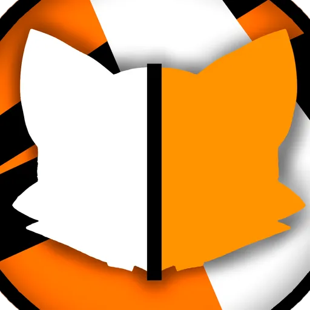

Servidor oficial
El Culto del Zorro
Comunidad oficial Furry, Gamer y Social. Un espacio libre donde podés compartir tus proyectos, participar en llamadas, jugar y pasarla genial con la manada. No tenés que ser furry para unirte, solo tener buena onda.